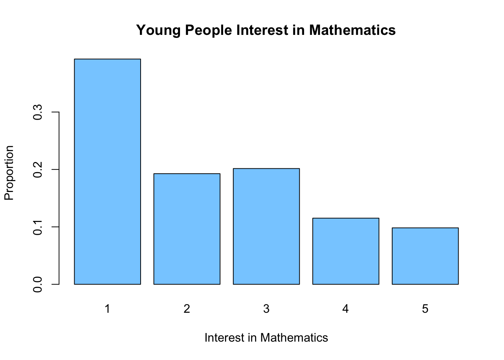
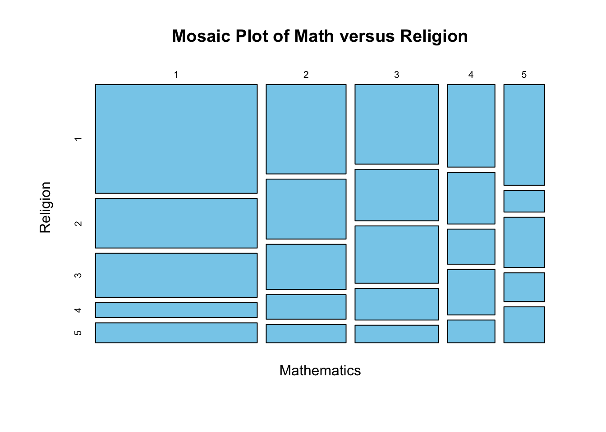

Chapter 17 Introduction to the Chi Square Test
17.1 Contingency Tables
In many situations we may want to look for a relationship between two categorical variables. To get an idea of this we will want to make what is called a contingency table. For example, lets look at the Young_People_Survey data set from my package.
data("Young_People_Survey")This data set contains answers of survey questions for 1010 Slovakian teenagers. The majority of the questions on the survey asked the participants to rate their feelings on a subject from 1 to 5. For the hobbies and interests section 1 means they are not interested in that and 5 means they are very interested.
For example, lets see how the participants rated their interest in mathematics:
table(Young_People_Survey$Mathematics)##
## 1 2 3 4 5
## 395 194 203 116 99We can make a plot of this to get a graphical visualization of the data:
barplot(prop.table(table(Young_People_Survey$Mathematics)), main = "Young People Interest in Mathematics",
ylab = "Proportion", xlab = "Interest in Mathematics", col = "skyblue1")
This is rather depressing data for a math professor. However, I might want to know if their is a relationship between a persons interest level in math and their interest in religion. Lets make a table of these two variables (contingency table)
table(Young_People_Survey$Mathematics, Young_People_Survey$Religion)##
## 1 2 3 4 5
## 1 180 82 73 25 33
## 2 73 49 37 20 15
## 3 68 44 49 27 15
## 4 40 25 17 22 11
## 5 42 9 21 12 15You can see that the most popular choice is that people are interested in neither math nor religion (rated both at a 1).
mosaicplot(xtabs(~Mathematics + Religion, data = Young_People_Survey), main = "Mosaic Plot of Math versus Religion",
col = "skyblue")
How can we test whether the answers to these two questions are linked?
Let’s assume (as our Null hypothesis) that they are completely independent of one another. So that knowledge of someones interest in religion would tell you nothing about their interest in mathematics. If this was the case how many people would be expect to have ended up in the (1,1) category? Well, we had 403 total people who rated math as a 1 and 393 total people who rated religion as a 1. The total people in the survey was 1004. Thus, if knowledge of one of these told us nothing about the other we who guess that 403*393/1004= 157.748008 people would have been in the (1,1) entry. In general our formula would be: \[E_{ij}=\frac{n_i \times n_j}{N}\] where \(n_i\) is the row sum and \(n_j\) is the column sum and \(N\) is the total data points. For the (1,1) entry we can see that our survey data (180) is larger than our expected number if we had no relationship. Filling out the rest of the table gives the following expected numbers if we had no relationship between the answers.
##
## 1 2 3 4 5
## 1 157.74801 81.80976 77.11255 41.49203 34.837649
## 2 77.87052 40.38446 38.06574 20.48207 17.197211
## 3 81.48307 42.25797 39.83167 21.43227 17.995020
## 4 46.16036 23.93924 22.56474 12.14143 10.194223
## 5 39.73805 20.60857 19.42530 10.45219 8.775896Taking the difference between the expected (with no relationship) and the observed gives us an idea of where the departures from independence may occur:
Observed-Expected=
##
## 1 2 3 4 5
## 1 22.2519920 0.1902390 -4.1125498 -16.4920319 -1.8376494
## 2 -4.8705179 8.6155378 -1.0657371 -0.4820717 -2.1972112
## 3 -13.4830677 1.7420319 9.1683267 5.5677291 -2.9950199
## 4 -6.1603586 1.0607570 -5.5647410 9.8585657 0.8057769
## 5 2.2619522 -11.6085657 1.5747012 1.5478088 6.2241036This is all fine and great but how can we tell if this is a real departure of just a random effect? A random sample will naturally lead to slightly different answers that the theoretical expected amounts in each category.
The answer is to use the \(\chi^2\) (chi-squared) test.
17.2 Chi Square Test
The idea of the \(\chi^2\) test is to compute the a sum of all the differences between the observations and the expected data if we have no relationship between the variables \[\chi^2=\sum_{i=1}^M \frac{(O_i-E_i)^2}{E_i}.\] Where \(O_i\) is the observed frequency in each category and \(E_i\) is the expected amount.
This \(\chi^2\) value will be large if the observed and expected values show a large departure.
chisq.test(table(Young_People_Survey$Mathematics, Young_People_Survey$Religion))##
## Pearson's Chi-squared test
##
## data: table(Young_People_Survey$Mathematics, Young_People_Survey$Religion)
## X-squared = 40.582, df = 16, p-value = 0.0006398The small p-value indicates that we should reject the null hypothesis that the distribution of values in the table is not entirely random.
Now lets do a sanity check by considering two columns which we don’t think are related at all. For example, lets look to see if peoples feelings about rock music tell us anything about their interest level in mathematics. I have no real reason to think those two things might be related.
table(Young_People_Survey$Mathematics, Young_People_Survey$Rock)##
## 1 2 3 4 5
## 1 25 45 74 113 135
## 2 11 20 45 62 54
## 3 9 19 44 58 73
## 4 6 8 26 38 37
## 5 4 13 16 23 43Lets run a \(\chi^2\) test to see if these two questions are related to one another.
chisq.test(table(Young_People_Survey$Mathematics, Young_People_Survey$Rock))##
## Pearson's Chi-squared test
##
## data: table(Young_People_Survey$Mathematics, Young_People_Survey$Rock)
## X-squared = 13.952, df = 16, p-value = 0.6023As we might expect we find that the p-value here is quite high (above any reasonable cut-off for statistical significance). Therefore we would retain the null hypothesis that these two columns are unrelated.
A key thing to note is that the \(\chi^2\) test does NOT tell us what entries in the table are responsible for the departure from independence. It could be that each of the entries are a little bit off leading to a large \(\chi^2\) statistic overall, or it could be the case that one entry is very different than the null. The test itself gives us no indication which of these is the case.
17.2.1 Conditions for Using the \(\chi^2\) test
The \(\chi^2\) test will not perform well (accurately) if the expected counts in any entry in the table is small. A rule-of-thumb is not to trust the conclusions for a \(\chi^2\) test performed on data where the expected counts in any entry in the table are less than 5.
Here is how you can check the expected counts for a chisquare test in R.
my.test <- chisq.test(table(Young_People_Survey$Mathematics, Young_People_Survey$Religion))
my.test$expected##
## 1 2 3 4 5
## 1 157.74801 81.80976 77.11255 41.49203 34.837649
## 2 77.87052 40.38446 38.06574 20.48207 17.197211
## 3 81.48307 42.25797 39.83167 21.43227 17.995020
## 4 46.16036 23.93924 22.56474 12.14143 10.194223
## 5 39.73805 20.60857 19.42530 10.45219 8.775896https://andrewgelman.com/2011/11/07/chi-square-fail-when-many-cells-have-small-expected-values/
17.2.2 Multiple Hypothesis Testing Again
The chi square test on a large data set like the Young People survey data is a good opportunity to recall what we have learned about multiple hypothesis testing. We have 150 columns of data in this data set. Therefore, I have the oppurtunity to run:
choose(150, 2)## [1] 11175different \(\chi^2\) tests to look for relationships between variables. If I run all of these tests using a significance threshold of \(\alpha=0.01\) they I can expect to make:
choose(150, 2) * 0.01## [1] 111.75Type I errors (that is False Positives). That is quite a few errors! If we estimate that 20 of these columns are actually related and our tests find everyone of these then we would have made over 5 incorrect predictions for every 1 correct one. That is not a good ratio!
The solution is to only run these statistical tests when we actually have some reason to suspect that the two columns may be related.
17.2.3 Using a different Null Hypothesis
By default the \(\chi^2\) test will assume we want to test our data against the uniform null hypothesis. Where attributes are assigned uniformly within each row/column, however we can change this is we have some reason to.
For example, lets suppose we are tasked with investigating the hiring practices of a business for discrimination based on age. Lets say the company has 100 employees and only 8 of them are older than 65. According to the census bureau 15.2% of the US population is over 65. Can we conclude that the percentage of older employees at the company differs from the population as a whole?
The null hypothesis here is that we have 84.8% Young and 15.2% old. We can tell R to use this null hypothesis in the \(\chi^2\) test .
age.table = as.table(c(Young = 92, Old = 8))
chisq.test(age.table, p = c(0.848, 0.152))##
## Chi-squared test for given probabilities
##
## data: age.table
## X-squared = 4.0218, df = 1, p-value = 0.04491So at the \(\alpha=0.05\) level we have sufficient evidence to reject the null. However, we can think of many reasons this might occur….
Exercise 17.1 For the Young people survey data lets see if the answers to the Mathematics and Physics questions are related. Run a \(\chi^2\) test between these two columns and interpret the results.
17.3 Homework
17.3.0.1 Concept Questions
Answer the following True/False questions: 1. The \(\chi^2\) test is used to determine if a relationship exists between two categorical variables
The \(\chi^2\) test is a form of a hypothesis test with a null and alternative hypothesis.
If the \(\chi^2\) test yields a p value above our significance threshold \(\alpha\) we have proved that the two categorical variables have no relationship.
The \(\chi^2\) test tells us when at least one entry in a table violates the independence assumptions but not which entry/entries are the guilty ones.
17.3.0.2 Practice Problems
- Load the data set
quine, by running the commandslibrary(MASS)anddata(quine). Run a chi square test to determine if the fraction of average learners (Age=AL) is the same for all age groups.
17.3.0.3 Advanced Problems
- Random Numbers: The \(\chi^2\) test can be used to determine if the outcomes of a random experiment are truly random or if they have been manipulated in some way. Let’s use this to test the random numbers generated by
R. The below code simulates rolling a dice 100 times and recording the results. Run this code inRto conduct your own experiment.
dice.rolls = sample(seq(1, 6), 100, replace = TRUE) ##roll a dice 100 times
table(dice.rolls)Now perform a \(\chi^2\) test on your results. What can you conclude from your test?
Notice, the \(\chi^2\) test can be used to discover when a supposedly random process is being manipulated.
- Mendel Peas: In genetics the \(\chi^2\) test is often used to detect when genes violate Mendel’s principle of independent assortment in the study of genetics. In the mid 1800’s Gregor Mendel came up with the modern theory of genetics using pea plants. Using his theory he was able to predict the percentage of his pea plants that would have certain characteristics. A table of his predicted fraction and the data he collected is shown below:
| Phenotype | Observed | Expected Frequency |
|---|---|---|
| Yellow round | 315 | 9/16 |
| Yellow wrinkled | 101 | 3/16 |
| Green round | 108 | 3/16 |
| Green wrinkled | 32 | 1/16 |
\(H_0\): The generation is comprised of four phenotypes in the proportions predicted by Mendelian genetics. \(H_a\): The generation is NOT comprised of the four phenotypes in the proprtions predicted by Mendelian genetics.
You can make a table for mendel’s data using the below command in R:
mendel.table = as.table(c(YR = 315, YW = 101, GR = 108, GW = 32))- Now run a \(\chi^2\) test with the null hypothesis in the
chisq.testcommand. Interpret your results.
- What is the logical issue with using a \(\chi^2\) test in this manner? Have we really proven Mendel’s theory?
- Young People Survey:
Load the young people survey data from my package with the command . Run a \(\chi^2\) test to look for a relationship between the
Young_People_Survey$Adrenaline sports`column and theYoung_People_Survey$Snakes` column. Interpret your results.